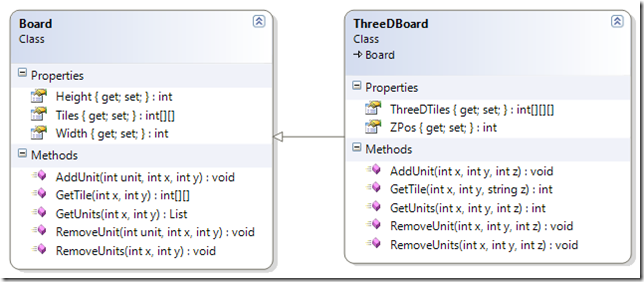

Bones Pràctiques
Campus d'Estiu d'Innovació Tecnològica UIB 2015
Jordi Llull
CTO a habitissimo

Per què aquesta xerrada?

"Talk is cheap. Show me the code." Linus Torvalds
Spaghetti code

Com avaluam el codi?
Dues persones avaluen de manera independent el codi sense conèixer la identitat del candidat
- Descomposició del problema. 10 punts.
- Estil de codi. 6 punts
- Nomenclatura de classes, funciones y variables. 4 punts
- Correcta organització del codi. 4 punts
- Gestió d'excepcions i edge cases. 4 punts
- Ús de tests unitaris i/o bateries de proves. 2 punt
2. Estil de codi
Disclaimer!
2. Estil de codi
Amb la col·laboració de:

.@governinsular teniu una errada al Javascript de la vostra plana web, adjunt captura de pantalla pic.twitter.com/2rBGQTYSyV
— Joan Font (@joanfont) July 12, 2015

function pinta_data ()
{
var fecha = new Date();
var diames = fecha.getDate();
var diasemana = fecha.getDay();
var mes = fecha.getMonth() +1 ;
var ano = fecha.getFullYear();
document.write(weekdayslong[diasemana] + ", " + diames
+ "/" + months[mes] + "/" + ano
);
}
var weekdayslong = new makeArray ('Dilluns',
'Dimarts',
'Dimecres',
'Dijous',
'Divendres',
'Dissabte',
'Diumenge');
function makeArray (){
for ( i = 0; i < makeArray.arguments.length; i++ )
this[i + 1] = makeArray.arguments[i];
}
Indentació vertical
function saveUser($request) {
$user = new User;
$user->id = $request->get('id');
$user->name = $request->get('name');
$user->email = $request->get('email');
$user->address= $request->get('address');
}
function saveUser($request) {
$user = new User;
$user->id = $request->get('id');
$user->name = $request->get('name');
$user->email = $request->get('email');
$user->address = $request->get('address');
}
Indentació vertical (II)
SELECT P.NAME, S.email, S.NAME
FROM professor AS P
INNER JOIN student AS S ON (S.professor_id = P.id)
WHERE P.NAME = 'Carlos Guerrero'
. SELECT P.name,
S.email,
S.name
FROM professor AS P
INNER JOIN student AS S ON (S.professor_id = P.id)
WHERE P.name = 'Carlos Guerrero'
Cascades de comportament
public function getAverageDegrees(String month) {
int degrees = 15;
switch (month) {
case "january":
degrees -= 5;
case "february":
degrees -= 5;
break;
case "march":
degrees += 1;
case "april":
degrees += 3;
break;
}
return degrees;
}
Brackets, please!
if (month == "january")
degrees = 5;
if (month == "january")
degrees = 5;
season = "Winter";
if (month == "january") {
degrees = 5;
}
if (month == "january") {
degrees = 5;
season = "Winter";
}
Explicit is better than implicit
x = 7 + 3 * 4 / 3 - 5;
x = 7 + ((3 * 4) / 3) - 5;
if a and b or c and d:
// Do something
if (a and b) or (c and d):
// Do something
}
Return early
1. Descomposició del problema
Nombres màgics
3. Correcta organització del codi
4. Gestió d'excepcions i edge cases
Never Try catch
public function getMap() {
try {
$filename = "map.txt"
...
} catch {
// Do something
}
}
public function getMap() {
try {
$filename = "map.txt"
...
} catch (FileNotFoundException $e) {
// Do something
}
}
5. Ús de tests unitaris i/o bateries de proves
Principis S.O.L.I.D.
Referències:
Principis SOLID
class CreateUserService():
def __init__(self, email_sender):
self.email_sender = email_sender
def create_user(name, email):
usr = User()
usr.name = name
usr.email = email
email_txt = "Welcome {name}".format(name=usr.name)
email_sender.send(user.email, email_txt)
return usr
Principis SOLID
class CreateUserService():
def __init__(self, notifier):
self.email_sender = notifier
def create_user(name, email):
usr = User()
usr.name = name
usr.email = email
self.notifier.notify_new_user(usr)
return usr
class Notifier():
def __init__(self, email_sender):
self.email_sender = email_sender
def notify_new_user(user):
email_txt = "Welcome {name}".format(name=usr.name)
email_sender.send(user.email, email_txt)
return email

Principis SOLID
class GraphicEditor
{
public void drawShape(Shape s) {
if (s.m_type == 1) {
drawRectangle(s);
} else if (s.m_type == 2) {
drawCircle(s);
}
}
public void drawCircle(Circle r) {....}
public void drawRectangle(Rectangle r) {....}
}
class Shape {
int m_type;
}
class Rectangle extends Shape {
Rectangle() {
super.m_type=1;
}
}
class Circle extends Shape {
Circle() {
super.m_type=2;
}
}
Principis SOLID
Open/Closed Principle
Les classes han de ser tancades a modificacions i obertes a herència

Principis SOLID
Liskov Substitution Principle
Les funcions que empren punters or referències a classes base han de poder emprar objectes derivats de la classe base.
Principis SOLID

Principis SOLID
Interface Segregation Principle
Un client no hauria de dependre mai d'un mètode que no necessita.
És a dir, les interficies han de contenir el conjunt mínim de mètodes necessaris
Principis SOLID
interface IWorker {
public void work();
public void eat();
}
class Worker implements IWorker{
public void work() {
// ....working
}
public void eat() {
// ...... eating in launch break
}
}
class Robot implements IWorker{
public void work() {
//.... working much more
}
public void eat() {
//.... ?????
}
Principis SOLID
interface IWorkable {
public void work();
}
interface IFeedable{
public void eat();
}
interface IWorker extends Feedable, Workable { }
class Worker implements IWorker { ... }
class Robot implements IWorkable { ... }
class Manager implements IFeedable { ... }

Principis SOLID
Dependency Inversion Principle
Els mòduls de més alt nivell no han de dependre dels mòduls de baix nivell. Ambdos han de dependre d'abstraccions.
Principis SOLID
public class Volvo
{
B20 _engine;
public Volvo()
{
_engine = new B20();
}
}
public class Volvo
{
IEngine _engine;
public Volvo(IEngine engine)
{
if (engine == null) throw new ArgumentNullException("engine");
_engine = engine;
}
}
var myVolvo = new Volvo(new BigBadV12());